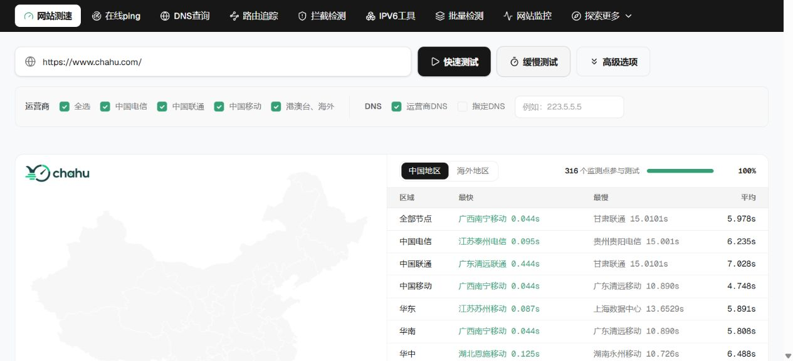
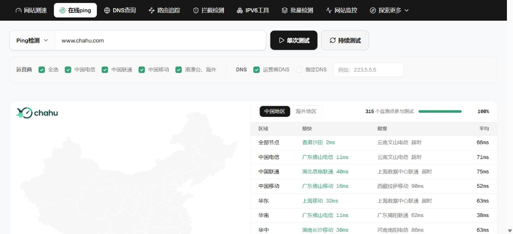
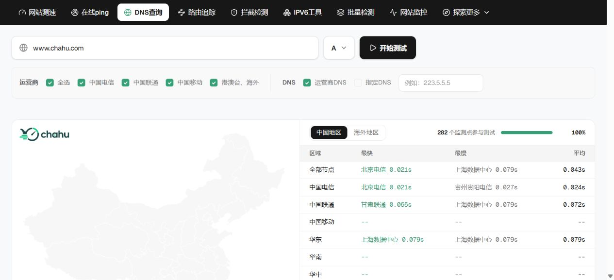
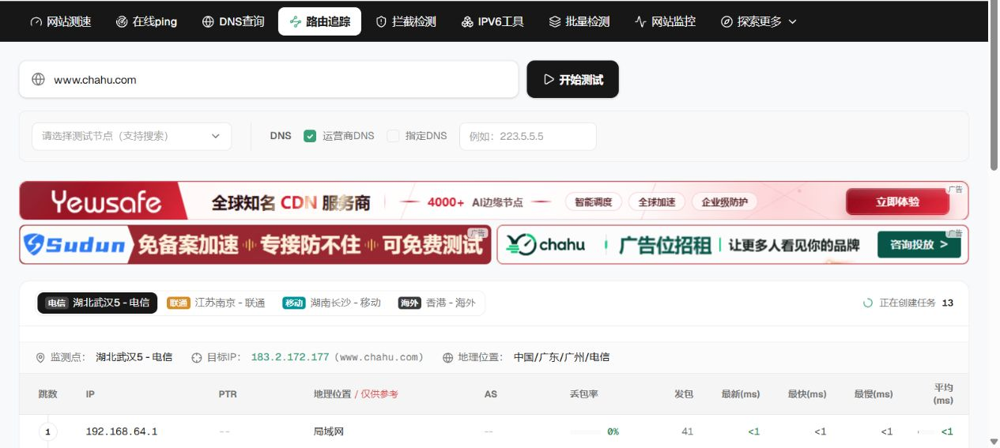
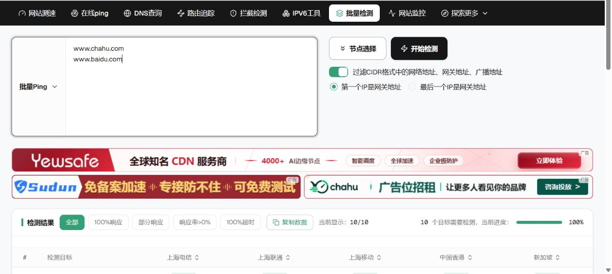

先说结论：茶壶测速值不值得用？
值得，特别是你的用户主要来自中国大陆、港澳台或亚洲地区时。茶壶测速最有价值的不是“测出一个速度数字”，而是把运营商、地区、DNS、响应 IP、HTTP 分阶段耗时和路由路径放在同一套诊断流程中。它更接近站长与运维的故障排查台，而不是普通消费者测速页面。
优势集中在国内节点密度、三网拆分和网络层到应用层的联合诊断；扣分主要来自个别任务的有效样本率、批量实时结果稳定性，以及页面广告对信息密度的影响。
如果你只想知道“服务器能不能 Ping 通”，任何简单 Ping 工具都够用；但如果你要回答“为什么广东移动快、甘肃联通慢”“DNS 是否把用户调度到不同 IP”“中间路由丢包是否影响最终连接”，茶壶测速提供的信息明显更完整。
测评方法与测试边界
所有结果均来自 2026 年 9 月 11 日凌晨的实际任务。主要目标为 www.chahu.com；IPv6 项目使用具有 AAAA 记录的 www.cloudflare.com，以避免把“目标站没有 IPv6”误判成工具无能力。
- 测试环境桌面 Chromium，UTC+8
- 默认范围电信、联通、移动、港澳台及海外
- DNS 模式运营商 DNS，A 记录
- 测试原则单次真实样本，不使用首页演示数据
网络测量具有时间性。本文数字是本轮样本，不代表任何域名的长期 SLA，也不能替代持续监控、RUM 或 APM。判断故障时应复测，并结合服务器日志。
七项工具实测总览
| 工具 | 本轮目标 | 关键结果 | 测评结论 |
|---|---|---|---|
| 网站测速 | www.chahu.com | 316 节点，最快 0.044s，平均 5.978s | 分阶段 HTTP 数据完整，适合定位慢节点 |
| 在线 Ping | www.chahu.com | 315 节点，平均 66ms，最快 2ms | 国内三网与地区视角清晰 |
| DNS 查询 | www.chahu.com | 识别 2 个 A 记录，响应样本平均 43ms | 解析分布有价值，但本轮超时样本较多 |
| 路由追踪 | www.chahu.com | 武汉电信至目标 13 跳，末跳平均 23ms | 逐跳 AS、位置与丢包信息专业 |
| 拦截检测 | www.chahu.com | 返回“正常”，状态 safe，代码 0 | 结论直观，适合作为故障分流入口 |
| IPv6 工具 | www.cloudflare.com | 94 个预期节点，4 个节点 HTTP 200 | 能暴露 IPv6 路径差异，有效样本率需关注 |
| 批量检测 | 2 域名 × 2 节点 | 任务受理，实时流 50 秒内未返回 | 功能设计完整，本轮稳定性未通过 |
1. 网站测速：不仅看总耗时，还能拆 DNS、连接和下载
评分 9.1 / 10快速测试覆盖 316 个节点。广西南宁移动最快为 0.044 秒，甘肃联通最慢为 15.0101 秒；电信、联通、移动平均分别为 6.235 秒、7.028 秒和 4.748 秒，港澳台平均 2.068 秒。
这个平均值不能简单理解成“网站需要 5.978 秒打开”。详细表格显示，部分节点连接或下载阶段接近超时阈值，拉高了整体平均。茶壶测速的优势正是能继续拆分解析、连接、下载、重定向、HTTP 状态码和响应头，让运维判断慢点发生在哪一层。
专业使用时建议先按失败节点筛选，再对比同运营商其他地区。若只有少量节点异常，应优先排查节点状态或局部路由；若同一运营商大范围变慢，再考虑跨网、CDN 调度或源站问题。

2. 在线 Ping：国内线路诊断是核心强项
评分 9.3 / 10本轮 在线 Ping共有 315 个节点参与。最快是香港沙田 2ms，国内最快包括广东佛山电信 11ms、广东佛山移动 16ms；三网平均为电信 71ms、联通 75ms、移动 52ms。
结果页同时给出中国地图、运营商和区域汇总、逐节点延迟、网络质量分级以及域名解析 IP 占比。本轮检测到 154.38.98.137 与 154.38.98.150 两个响应 IP，各占约一半，这对检查负载均衡或 DNS 调度是否均匀很有帮助。
Ping 的价值是判断网络往返和丢包，不代表网页加载性能。最佳流程是先用 Ping 判断链路，再回到网站测速检查 HTTP 阶段。

3. DNS 查询：解析分布清楚，但必须关注有效样本数
评分 8.2 / 10DNS 查询成功识别两个 A 记录，并展示节点实际使用的递归 DNS，例如 114.114.114.114、8.8.8.8 和本地解析器。响应样本最快 21ms，汇总平均 43ms。
值得注意的是，本轮页面把 282 个节点列为参与测试，其中 274 个记录显示超时。这个现象不能直接证明域名 DNS 异常，因为同一时间网站测速和 Ping 能正常解析并访问两个目标 IP。更合理的解释是本轮 DNS 任务的节点响应率偏低，应复测并结合权威 DNS 查询。
建议产品在汇总区同时显示“有效响应节点数 / 总节点数”，并把平均值标注为“有效样本平均”，避免用户把少量成功样本误读成整体表现。

4. 路由追踪：逐跳信息足够专业，适合定位绕路
评分 9.0 / 10路由追踪默认选择湖北武汉电信节点，目标解析到 183.2.172.177。结果逐跳显示 IP、PTR、位置、AS、丢包率、发包数以及最新、最快、最慢和平均延迟。
第 9 跳骨干网 AS4134 显示 26% 丢包，但最终第 13 跳为 0% 丢包、平均 23ms。这是典型的中间路由器降低 ICMP 响应优先级，并不等于业务端到端丢包。能看到末跳数据，才不会仅凭中间某跳的红色数字误判。
对于“某省某运营商访问慢”“CDN 回源绕路”“跨境路径异常”等问题，这一页比单纯的 Traceroute 文本更容易比较。

5. 拦截检测：适合作为“打不开”问题的第一道分流
评分 8.5 / 10本轮 拦截检测返回“正常”，状态为 safe。这类工具最大的价值不是给出绝对结论，而是快速把故障划分为域名拦截、DNS 污染、线路异常或源站故障等不同方向。
平台同时提供被墙、DNS 污染、DNS 劫持以及常见平台拦截等入口。实际运维中建议至少搭配 DNS 查询和网站测速复核，因为任何单一拦截判断都受节点、解析和检测时间影响。
6. IPv6 工具：能测真实链路，但结果更需要解释
评分 8.0 / 10为避免目标自身没有 AAAA 记录，本轮使用 www.cloudflare.com 测试 IPv6 网站测速。任务预期调度 94 个节点，其中江苏移动、新疆联通、河南联通和内蒙古移动 4 个节点返回 HTTP 200。
成功节点连接到 2606:4700::6810:7b60 或 2606:4700::6810:7c60，总耗时介于 1.296 秒和 1.657 秒。低成功率说明国内 IPv6 探测链路、节点可用性或目标可达性存在明显差异，这恰恰是 IPv6 专项拨测的价值。
这项结果不应被解读为 Cloudflare 只有 4 个地区可访问。更严谨的说法是：在本轮 94 个预期探测节点中，平台收到了 4 个有效 HTTP 成功样本。
7. 批量检测：功能覆盖广，本轮实时结果稳定性需改进
评分 7.5 / 10批量检测支持 Ping、TCPing、HTTP、IPv4 范围与 CIDR，单次最多 256 个检测目标、最多 5 个节点，还提供网关地址和广播地址过滤。这种设计适合资产巡检、迁移验收和同批域名对比。
本轮真实任务使用 www.chahu.com、www.baidu.com 两个目标和香港沙田、新加坡两个节点。服务端成功创建任务，但实时结果流在 50 秒内没有返回数据，因此本项没有引用页面默认展示的 10 个样例结果。
客观结论：批量功能的输入、节点选择和任务模型完整，但本轮无法验证最终结果质量。正式生产使用前，建议在业务高峰和低峰各复测一次。

评分拆解：为什么综合得分是 8.7？
主要优点
- 国内三网和地区节点密度高
- Ping、DNS、HTTP、路由可以串联排查
- 结果页兼顾汇总和逐节点细节
- 解析 IP 分布、AS 与分阶段耗时实用
- 无需安装客户端即可开始公开目标测试
需要改进
- 平均值应补充 P50、P95 与有效样本数
- DNS 本轮超时节点较多，需要更清晰解释
- 批量实时流本轮没有完成返回
- 广告较密集，容易分散对结果的注意力
- 应进一步区分“节点异常”和“目标异常”
正确使用顺序：从“现象”走到“根因”
- 先做网站测速：确认哪些地区、运营商和 HTTP 阶段变慢。
- 再做在线 Ping：判断问题是否发生在网络往返、丢包或跨网线路。
- 检查 DNS：核对不同地区是否解析到预期 IP，CDN 调度是否一致。
- 使用路由追踪：定位绕路、异常 AS 或跨运营商互联问题。
- 出现区域性打不开时做拦截检测：区分拦截、污染与普通网络故障。
- IPv6 业务单独测：不要用 IPv4 正常推断 IPv6 一定正常。
- 最后用批量检测复核：对多个域名、IP 或资产做同条件横向比较。
茶壶测速的最佳定位是“外部主动拨测与故障诊断平台”。它能告诉你用户所在网络到目标站发生了什么，但服务器 CPU、数据库慢查询、前端 JavaScript 阻塞仍需 APM、日志和真实用户监控补充。
最适合哪些用户？
- 国内网站站长：需要比较电信、联通、移动和不同省份的访问差异。
- CDN 与云服务运维：需要验证解析调度、回源路径和节点覆盖。
- 跨境与出海团队：需要同时观察中国节点与港澳台、海外节点。
- SEO 与增长团队：需要确认技术可访问性，而不是只看实验室性能分数。
- 开发与 SRE：需要在 DNS、TCP、HTTP 和路由层之间快速缩小问题范围。
如果业务只面向单一机房内部网络，或已经部署成熟的 Prometheus、APM 和全球 Synthetic Monitoring，茶壶测速更适合作为外部交叉验证，而不是主监控系统。
常见问题
茶壶测速适合检测国内网站吗？
适合。它最大的差异化就是把国内三大运营商和各地节点拆开显示，能发现本地测试无法看到的区域性问题。
Ping 很快，为什么网站测速仍然很慢？
Ping 只反映 ICMP 往返；网站测速还包含 DNS、TCP/TLS、服务器处理、重定向和下载。Ping 低只能说明链路延迟不高，不能证明页面加载快。
DNS 查询出现大量超时，是否说明域名解析坏了？
不能直接下结论。应先看有效响应节点、权威 DNS、其他检测类型是否能正常解析，再复测确认是目标问题还是探测节点问题。
路由中间一跳 100% 丢包，网站一定有问题吗？
不一定。很多路由器限制 ICMP 回复。如果后续跳和最终目标仍有正常响应，中间跳丢包通常只是控制面降级。
茶壶测速能代替持续网站监控吗？
不能完全代替。单次拨测适合诊断，网站监控、RUM 和 APM 才适合看长期趋势、告警与应用内部性能。
最终评价
在网站测速工具推荐中，茶壶测速的竞争力不是单项跑分，而是国内节点覆盖、运营商维度和多工具协同。网站测速负责识别慢点，Ping 判断网络，DNS 检查调度，路由追踪定位路径，拦截检测负责故障分流，IPv6 与批量工具补充专项场景。
本轮测试也说明它仍有提升空间：DNS 有效样本提示应更明确，批量实时结果需要进一步增强稳定性，汇总统计应增加分位数。正因为文章保留这些限制，8.7 分的推荐结论才有技术参考价值。
建议把茶壶测速加入故障排查工具箱，并与服务器监控、日志、APM 和真实用户数据组合使用。
官方工具入口
测试披露：本文由 Chahu 项目账号发布，测试数据来自公开工具的真实任务。评分属于单次技术测评意见；未把页面默认演示数据作为实测结果。网络状态随时间变化，请以复测结果为准。